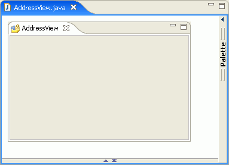

The visual editor for Java supports the creation and development
of Rich Client Platform (RCP) views.
Before you can create a new Java visual class, you must create a Java
project or Plug-in project where you can place the visual class. A Plug-in
project that is enabled for Rich Client Platform (RCP) application development
is required if you want to create a new RCP view or editor.
An RCP view is a class that extends org.eclipse.ui.part.ViewPart.
You can use the New Java Visual Class wizard to quickly create a new visual
class that extends ViewPart. The wizard creates the ViewPart and adds an SWT
composite as the default container. You can then use the SWT controls and
containers to design the contents of the view.
Tip: The visual
editor uses your workbench preferences for View tab position (top or bottom)
and tab style (traditional or non-traditional) during design and when you
run the view as a Java bean.
To create an RCP view:
- Complete the steps for Creating a new Java visual class,
specifying RCP View in the Style list. The
new Java class opens in the visual editor showing the ViewPart with a composite.

- Use the SWT controls and containers to design the contents of the
view. See Adding a component to a Java visual class and Working with SWT in the visual editor for more information.
You can test the view independently by running it as a Java bean
().
To incorporate the view into your plug-in,
you need to register the view as an extension point in your project and include
it in the proper perspective to display correctly as part of the RCP application.
For more information about adding views to a Rich Client Platform application
or rich client plug-in, see the following topics: